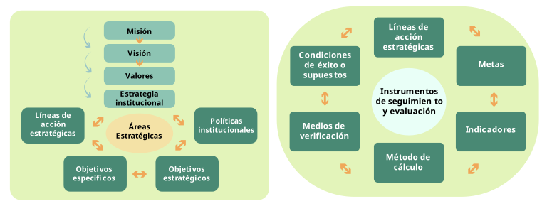
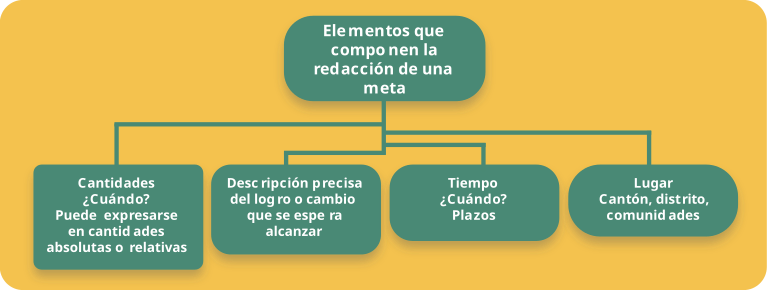

Etapa de elaboración y validación
Cuidando el crecimiento y dando forma al jardín
Paso 8:
Diseño de instrumentos de seguimiento y evaluación
“El presente se construyó en el pasado y el futuro se construye en el presente”
Este paso garantiza que el PDM no se quede en el papel y que su implementación pueda ser monitoreada y evaluada. Definir herramientas de seguimiento permite medir avances, hacer ajustes y asegurar que los resultados se logren, considerando los componentes del marco filosófico y estratégico ya definidos.
¿Por qué es importante el seguimiento y la evaluación?
- Control de avances: permite verificar que las acciones se realicen según lo planeado.
- Líneas estratégicas: los participantes podrán asociar líneas de acción estratégicas con sus respectivas metas y estas, a su vez, con los indicadores.
- Mejora continua: ayuda a identificar problemas y a hacer correcciones a tiempo.
- Rendición de cuentas: facilita informar a la comunidad sobre los logros y desafíos del PDM.
Esquema de trabajo
La siguiente guía de trabajo comprende ejercicios que le permitirán abordar, paso a paso, los contenidos citados. El esquema de trabajo por seguir es el siguiente:
Figura 4. Esquema de trabajo estructurado

Fuente: Elaboración propia
Acciones clave
Para cumplir con este paso, se sigue un esquema de trabajo estructurado en cuatro fases:
A. Definir metas e indicadores
En esta fase, es necesario identificar, claramente, cuál es la contribución de cada línea estratégica para el cumplimiento de los objetivos del plan. Esta claridad permitirá establecer metas viables para el periodo que comprende el plan.
Definición de metas
De acuerdo con el Glosario de la OECD, una meta es “el objetivo global hacia el cual se prevé que contribuya una intervención para el desarrollo”.
Características
- Son una expresión cuantitativa y cualitativa de los objetivos.
- Expresan, puntualmente, los compromisos de la institución.
- Parte más visible del PDM y son referencia inmediata para calificar el grado de avance y cumplimiento de esos compromisos institucionales.
- Hacen referencia, muy concreta, al cuánto y al cuándo (importante para la programación).
- Se redactan a partir de un enunciado preciso, concreto, claro y de simple comprensión.
- Permiten establecer límites o niveles máximos de logro.
Importancia
- Son básicas para la ejecución acertada de estrategias, ya que forman la base para la asignación de recursos.
- Constituyen un instrumento para controlar el avance hacia el logro de los objetivos y recogen las prioridades de la organización.
- Deben estar adecuadamente formuladas para que sean coherentes con los objetivos señalados y que sirvan de respaldo a la ejecución de las estrategias.
- Deben ser claras y conocidas dentro de la organización, además deben contar con información sobre cantidad, costos, tiempo y ser verificables.
- Sirven para medir el logro de los resultados y compararlos con la situación inicial.
- Pueden ser medidas, números, porcentajes, hechos, opiniones o percepciones.
- Facilitan mirar de cerca los resultados.
- Permiten medir cambios en la condición o situación a través del tiempo.
- Instrumentos muy importantes para evaluar y dar seguimiento.
- Permiten orientarnos sobre cómo se pueden alcanzar mejores resultados.
Criterios importantes para establecer las metas
- Deben ser cuantificables, para permitir su medición.
- Deben estar directamente relacionadas con el objetivo.
- Deben ser factibles de alcanzar y realistas respecto a plazos y a recursos humanos y financieros que involucran.
- Su establecimiento debe considerar diferentes parámetros (desempeño histórico, programas similares, estándares–normas técnicas).
- Deben ser posibles de cumplir por la municipalidad con los recursos financieros, humanos, físicos y tecnológicos disponibles.
- Su logro depende de la municipalidad (establecer supuestos).
- Deben establecerse, para ser cumplidas en un plazo determinado.
- Deben expresar, claramente, el ámbito geográfico que cubre.
- Deber ser conocidas y acordadas con los líderes de proceso (establecer los responsables por el cumplimiento).
¡Recuerde!
La meta es la expresión concreta y cuantificable de lo que se espera alcanzar con la línea de acción (programa, proyecto o actividad) y permitirá, en adelante, medir cuánto se ha alcanzado de lo proyectado. La meta se compone de dos datos:
- Unidad de medida: forma en que se mide la meta (kilómetros, unidades, metros cuadrados, metros cúbicos, otros)
- Cantidad: número de unidades de medida que se espera alcanzar.
A continuación, algunos ejemplos:
- En el proyecto “Rehabilitación de caminos vecinales”, la unidad de medida es “kilómetros” y la cantidad puede ser “50”, esto quiere decir que la meta es rehabilitar 50 kilómetros.
- En el proyecto “Construcción de salones comunales”, la unidad de medida es “unidad o salón” y la cantidad puede ser “2”, esto quiere decir que la meta es construir 2 unidades o salones.
Figura 4. Elementos que componen la redacción de una meta

Fuente: Elaboración propia
Componentes de las metas
El indicador
De acuerdo con el Glosario de términos de la OECD, un indicador es:
“Variable o factor cuantitativo o cualitativo que proporciona un medio sencillo y fiable para medir logros, reflejar los cambios vinculados con una intervención o ayudar a evaluar los resultados de un organismo de desarrollo”.
Los indicadores son un punto de referencia que permite observar y medir el avance en el logro de una meta esperada. Además, los indicadores son un conjunto de parámetros que, con la información de la meta, permitirán medir el grado de avance de los proyectos y programas.
Características
- Medibles: expresan un valor cuantificable o calificable.
- Disponibles: para medirlos es necesario contar con la información.
- Determinantes: expresan mejor y más adecuadamente el avance del programa o proyecto.
- Válidos: reflejan lo que se pretende medir.
- Precisos: están definidos, de manera clara y sin ambigüedades.
- Fáciles: de cuantificar, agregar y desagregar.
- Sencillos: de fácil manejo e interpretación.
- Asequibles: el costo de información requerida para construirlos no debe ser alto.
Requisitos adicionales para los indicadores
- Deben generar información relevante para quien toma decisiones.
- Deben cubrir todas las áreas de la municipalidad (áreas clave).
- Deben medir los aspectos relevantes de cada área.
- Deben ser específicos para las decisiones de cada jefatura o líder de proceso.
- Deben ser datos o números manejables.
- El requisito fundamental para el diseño del indicador es el establecimiento previo de los objetivos y metas “lo que será medido”.
Funciones de los indicadores
- Función descriptiva: aportan información sobre el estado real de una actuación pública o programa, por ejemplo, “el número de estudiantes que reciben beca”.
- Función valorativa: añaden un “juicio de valor” basado en antecedentes objetivos sobre si el desempeño, en dicho programa o actuación pública, es o no el adecuado. Por ejemplo, “número de becas entregadas con relación a los estudiantes identificados en situación vulnerable”, lo que informa sobre el logro de la actuación del objetivo de “aumentar el número de becas para estudiantes en condición de vulnerabilidad” (Bonnefoy y Armijo, 2005).
¡Recuerde!
Un indicador es un punto de referencia que permite observar y medir el avance en el logro de una meta esperada. Según la información proporcionada por cada indicador, estos pueden ser cualitativos o cuantitativos. Son variables (cuantitativas o cualitativas) o relaciones entre variables que permiten medir el grado de cumplimiento de la meta por evaluar y del respectivo objetivo.
Los indicadores cuantitativos se expresan en términos de número, porcentaje, razón (tasas).
Ejemplo
- Número de adultos mayores atendidos con campañas de vacunación sobre el total de adultos mayores del cantón.
- Porcentaje de disminución de la evasión de impuestos.
- Porcentaje de estudiantes en condición vulnerable que recibieron beca.
| Meta: | Indicador: |
| Recolectar 1200 toneladas de basura por año en el distrito de Casimiro durante el periodo 2024. | Número de toneladas de basura recolectadas. |
El resultado del indicador siempre debe ser igual a la unidad de medida de la meta.
¡Recuerde!
“Un indicador es una unidad de medida que permite el seguimiento y evaluación periódica de las variables clave de una organización, mediante su comparación en el tiempo con los correspondientes referentes externos o internos”
(Asociación Española de Contabilidad y Administración de Empresas. AECA, 2002).
El método de cálculo
La fórmula de cálculo es una relación matemática entre las variables que deben entregar como resultado lo que dice el nombre del indicador. Determina cómo se relacionan las variables establecidas para el indicador. Para cada indicador validado, es necesario definir la fórmula de cálculo.
Ejemplos de fórmulas de cálculo
Porcentaje de solicitudes respondidas respecto de las solicitudes ingresadas:
Fuente: ILPES-CEPAL, año.
Cuadro 24. Cálculo de indicadores.
| Indicador | Método de cálculo |
|---|---|
| Porcentaje de estudiantes de familias de escasos recursos que recibieron apoyo económico (beca). | $$ \left( \frac{\text{Estudiantes de familias de escasos recursos que recibieron apoyo económico}} {\text{Total de estudiantes de familias de escasos recursos que hicieron solicitud}} \right) \times 100 $$ |
| Cobertura del servicio de recolección de residuos. | $$ \left( \frac{\text{Población cubierta por el servicio de recolección}} {\text{Población total del cantón}} \right) \times 100 $$ |
| Número de toneladas de basura recolectadas. | $$ \text{Volumen de recolección (toneladas / día)} $$ |
| Porcentaje de estudiantes de familias de escasos recursos que recibieron apoyo económico (beca). | $$ \left( \frac{\text{Estudiantes de familias de escasos recursos que recibieron apoyo económico}} {\text{Total de estudiantes de familias de escasos recursos que hicieron solicitud}} \right) \times 100 $$ |
| Cobertura de atención en red vial cantonal total. | $$ \left( \frac{\text{Kilómetros atendidos en vías prioritarias de mayor categoría}} {\text{Total de vías}} \right) \times 100 $$ |
| Registro de licencias de urbanización y construcción. | $$ \left( \frac{\text{Número de licencias de urbanización residencial para proyectos de interés social}} {\text{Total de licencias de construcción}} \right) \times 100 $$ |
| Porcentaje de cumplimiento de los ingresos previstos. | $$ \left( \frac{\text{Ingresos reales}} {\text{Ingresos proyectados}} \right) \times 100 $$ |
| Porcentaje de adultos mayores atendidos que se encuentran en situación de extrema pobreza. | $$ \left( \frac{\text{Total de adultos mayores atendidos que se encuentran en situación de extrema pobreza}} {\text{Total de adultos mayores atendidos}} \right) \times 100 $$ |
Fuente: Elaboración propia.
Cuadro 25. Tipos de fórmulas más utilizadas.
| Tipo | Descripción | Fórmula |
|---|---|---|
| Porcentajes |
|
$$
\left(
\frac{\text{Numerador}}
{\text{Denominador}}
\right)
\times 100
=
\text{X por ciento}
$$
Misma unidad de medida (personas, Km., solicitudes, etc.). |
| Tasa de variación |
|
$$ \left[ \left( \frac{\text{Variable año } t} {\text{Variable año } t-1} \right) -1 \right] \times 100 = \text{X por ciento} $$ $$ \left( \frac{ \text{Variable año } t - \text{Variable año } t-1 } { \text{Variable año } t-1 } \right) \times 100 = \text{X por ciento} $$ |
| Razón o promedio |
|
$$ \left( \frac{\text{Numerador}} {\text{Denominador}} \right) = \text{unidades promedio del numerador por cada unidad del denominador} $$ |
| Índices |
|
Promedio anual de remuneraciones año n:
$$ \text{Índice año } n = \left( \frac{\text{Valor año } n} {\text{Valor año base}} \right) \times 100 $$ |
Fuente: Elaboración propia.
Cuadro 26. Ejemplos.
| Línea de acción (proyecto) | Meta | Indicador | Método de cálculo |
|---|---|---|---|
| Infraestructura vial | |||
| Mejoramiento de la superficie de ruedo del camino 1-18-017 (Linda Vista). | Un camino asfaltado y de doble vía de, al menos, 2 km de longitud al concluir el tercer año del PDM, que comunique las comunidades de Linda Vista y Manapa. | Porcentaje de cumplimiento (avance) de la obra. | $$ \left( \frac{\text{Total km avance de obra}} {\text{Total km programados}} \right) \times 100 $$ |
| POLÍTICA SOCIAL LOCAL (VIVIENDA) | |||
| Construcción de un proyecto de asentamiento humano en el cantón de Esperanza. |
|
|
$$ \left( \frac{\text{Total viviendas entregadas}} {\text{Total viviendas propuestas}} \right) \times 100 $$ $$ \left( \frac{\text{Total familias beneficiadas}} {\text{Total familias identificadas}} \right) \times 100 $$ |
| Impulso de alianzas estratégicas con instituciones y organizaciones tales como: MIVAH, IMAS; INAMU; INVU, CNREE, universidades estatales, organizaciones de la sociedad civil, empresas, otros, para promover la ejecución y apoyo a proyectos de bienestar social en el cantón. | Alianzas estratégicas participando y apoyando, en un 100%, los proyectos impulsados por el área social municipal al término del plan. | Número de alianzas estratégicas establecidas. | $$ \left( \frac{\text{Total de alianzas establecidas}} {\text{Total de instituciones}} \right) \times 100 $$ |
| Revisar y actualizar el Reglamento de Becas Municipal para modificar montos de ayudas y beneficiar más estudiantes de bajos recursos. | Readecuación, en el 2026, del reglamento que sustenta el programa municipal de becas para asignar, como mínimo, un promedio de cien becas a estudiantes de bajos recursos. |
|
$$ \left( \frac{\text{Estudiantes de familias de escasos recursos que recibieron apoyo económico}} {\text{Total de estudiantes de familias de escasos recursos que presentaron solicitud}} \right) \times 100 $$ $$ \left( \frac{\text{Total estudiantes becados}} {\text{Total becas programadas}} \right) \times 100 $$ |
| Fortalecer la promoción y divulgación de los métodos de resolución alterna de conflictos en el cantón (campañas periódicas de sensibilización). | Al menos, tres procesos socioeducativos al año (quince en total) sobre resolución alterna de conflictos durante el período de ejecución del plan. |
|
$$ \left( \frac{\text{Total acciones ejecutadas}} {\text{Total acciones programadas}} \right) \times 100 $$ |
| Mejoramiento y fortalecimiento del sistema de intermediación y bolsa de empleo municipal que incorpore el tema de accesibilidad (prioridad a personas con discapacidad). | Mejoradas y fortalecidas en, al menos, un 90% las gestiones y acciones para consolidar el sistema de intermediación y bolsa de empleo al 2024. |
|
$$ \left( \frac{\text{Total personas que ingresan al mercado laboral}} {\text{Total oferentes bolsa de empleo}} \right) \times 100 $$ |
| Reestructurar el área social para ampliar la cobertura, impacto y atención a la población vulnerable del cantón. | Ampliada la capacidad de cobertura en atención de procesos y fortalecimiento de acciones dirigidas a poblaciones vulnerables al término del plan. | Porcentaje de horas anuales dedicadas a acciones de sensibilización y denuncia social. | $$ \left( \frac{\text{Total de horas invertidas}} {\text{Total de horas programadas}} \right) \times 100 $$ |
| Desarrollo institucional (las TIC) | |||
| Licitar una consultoría para la elaboración de un software capaz de digitalizar todas las bases de datos de ingresos, catastro, recursos humanos y contratación de bienes y servicios. | Licitación para la realización de una consultoría para la elaboración de un software capaz de actualizar la base de datos municipal, adjudicada en el año 2025. |
|
$$ \left( \frac{\text{Gestiones ejecutadas}} {\text{Gestiones programadas}} \right) \times 100 $$ |
| Crear una plaza de asistente de ingeniero en informática para operar la plataforma digital. | Una plaza de asistente de ingeniero en informática incorporada en el PAO 2017. |
|
|
| Capacitar a funcionarios del área de hacienda, catastro y secretaría. | Cinco funcionarios capacitados en las TIC para finales del año 2024 por medio de un convenio con la UNED. |
|
$$ \left( \frac{\text{Total funcionarios capacitados}} {\text{Total funcionarios}} \right) \times 100 $$ |
| Ambiente | |||
| Creación de vivero municipal donde se cultiven especies de árboles y plantas originarias de la zona, y que luego puedan usarse en un proceso de arborización en el cantón. | Vivero cantonal dedicado al cultivo de especies de árboles y plantas originarias de la zona, instalado al 2024 y en producción en 2025. |
|
$$ \left( \frac{\text{Total árboles y plantas sembradas}} {\text{Total árboles y plantas programados para sembrar}} \right) \times 100 $$ |
| Equipamiento | |||
| Inventario del faltante de aceras en los cuadrantes de Pailas, centro de Tatol y Guayabita, e impulso de un programa municipal de construcción de aceras. |
|
|
$$ \left( \frac{\text{Total metros lineales de aceras construidas}} {\text{Total metros lineales de aceras inventariadas en los 27 cuadrantes}} \right) \times 100 $$ |
Fuente: Elaboración propia.
Importante
Ponga particular énfasis en incorporar metas e indicadores asociados a acciones que tienen significativa incidencia en los ingresos municipales:
- Impuestos sobre la propiedad de bienes e inmuebles
- Impuestos específicos a la construcción
- Patentes municipales.
- Actualización del inventario de la red vial que impacta los recursos transferidos por la Ley 8114.
- Servicios municipales (cementerio, recolección de basura, aseo de vías, venta de otros servicios).
Indicadores de desempeño
¿Qué es desempeño?
El desempeño se define como la capacidad de una institución para gestionar adecuadamente sus recursos y otorgar cumplimiento a los objetivos y metas establecidos.
Según Hernández (2002), el desempeño “implica la consideración de un proceso organizacional, dinámico en el tiempo y refleja modificaciones del entorno organizativo, de las estructuras de poder y los objetivos”.
Indicadores de desempeño
Los indicadores de desempeño son herramientas que proporcionan información sobre el logro o resultado en la entrega de productos (bienes y servicios) generados por la municipalidad. Cubren aspectos tanto cuantitativos como cualitativos.
“Los indicadores de desempeño son medidas que describen cuan bien se están desarrollando los objetivos de un programa, un proyecto y/o la gestión de una institución.”
La importancia de los indicadores de desempeño